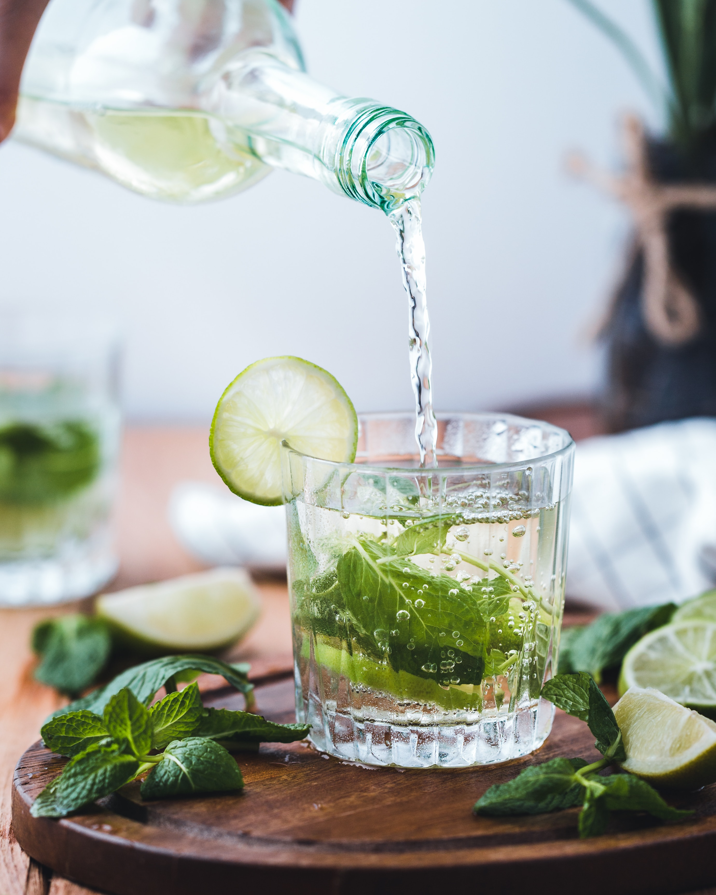

Mojito

Description
This Frozen Mojito recipe might be even better
than the classic drink!
It's minty, icy, and outrageously refreshing.
Recipe source: acouplecooks
Photo by Mae Mu on Unsplash
Ingredients
- 4 ounces (1/2 cup) white rum
- 2 ounces (1/4 cup) lime juice, plus more wedges to garnish
- 2 ounces (1/4 cup) simple syrup
- 1 handful mint leaves (10-12 leaves)
- 2 cups ice cubes
Steps
- Place all ingredients in a blender and blend
until smooth.
- Pour into two glasses and garnish with lime wedges.